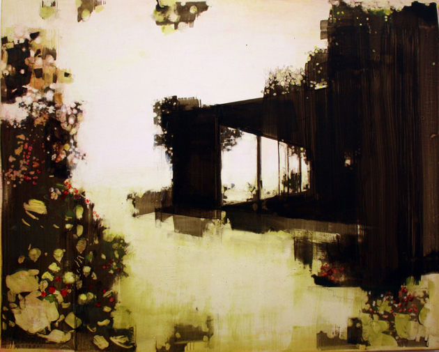
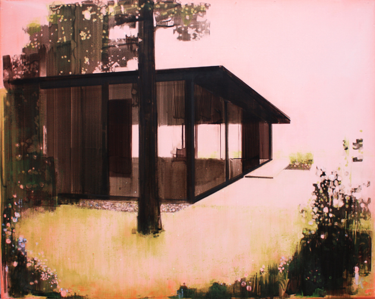
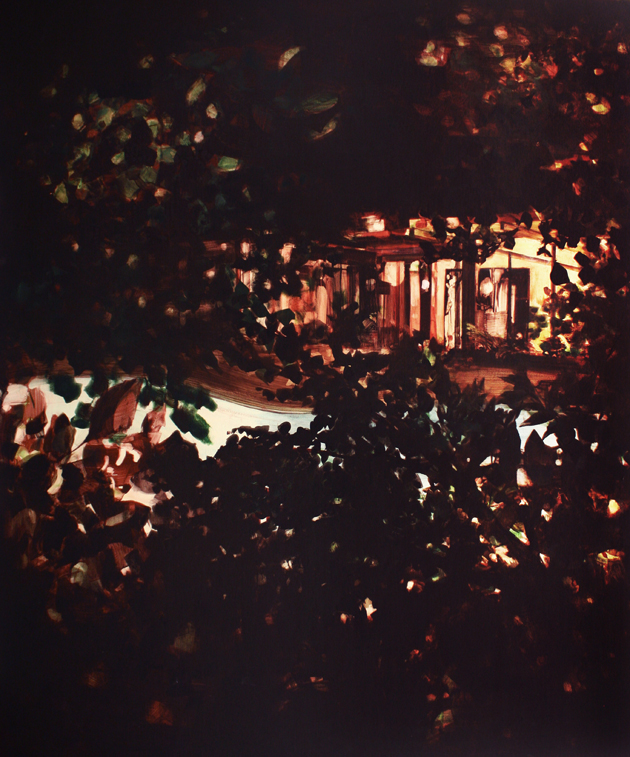
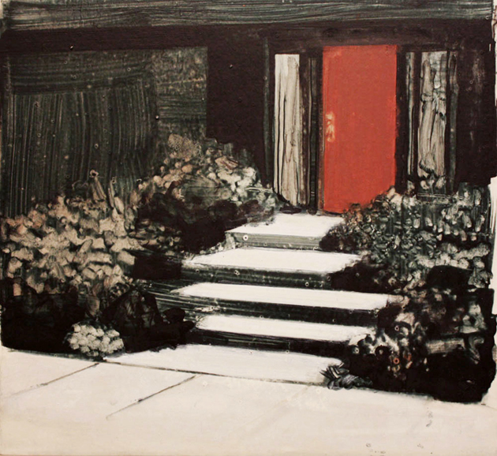
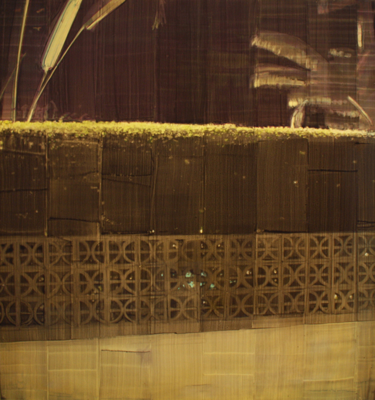

Megan Berk
SOMEONE ELSE’S EDEN
A CONVERSATION
So you were born and raised in Los Angeles?
Yes, I was. My thesis show for grad school was all based on Palm Springs. I go there once every two years with my mom. I tend to take more pictures and have more ideas there than almost anywhere.
What is Palm Springs like?
It’s an oasis in the middle of the desert. There’s nothing around it and it’s like this sudden burst of green. And also kind of an oasis of luxury in the middle of a pretty not-luxurious, tract house-y, low-income area of California. It’s really caught in time, in a way. There’s a sense of nostalgia for the people there, but it’s, like, a very genuine kind of nostalgia. People are thinking they’re in another place and time, but they’re very comfortable in it. No one’s presumptuous. People take care of these 1950’s houses and just live a life that’s very low-key. It’s kind of an idea about middle-class leisure – this leisure lifestyle and this vacation lifestyle – that’s just barely held together. The surface is still very much the same as it was, but it’s all aged. A lot of stuff has just kind of lost it. There’s lots of cracked pavement. Everything has just been patched up around the edges. A lot of people think it’s kind of run-down, but I think it’s a very interesting place, and also a very beautiful place. There are a lot of weird things happening simultaneously: you have this glamour and luxury side-by-side this major deterioration and decay.
It’s funny that they sort of have to be stewards of this bygone era. But do they really wish it were still the fifties?
Well, I think it’s really interesting: when you’re in grad school – in the MFA world at least – nostalgia is such a cliché. Not only do you not want to make things that are nostalgic but people don’t even like to talk about thinking about making things that are nostalgic.
But nostalgia is such a huge part of American culture and culture in general! If you’re talking about postmodernism or postmodern culture, then you have to at least critique nostalgia.
Yeah, so when I was in grad school it just made me want to delve into it. Even though I lived in New York for six years before going to grad school, I still am very much stuck in LA. And I think when you’re in your twenties, everyone’s intrigued by the idea of what your life was going to be like when you were a kid, and the idea of what your life is like now. And if you want to think about that, I feel like you naturally have to go back to the landscape where you came from. And that’s what I was thinking about, so that’s what I did – living in New York and making paintings of California.
A lot of the stuff that I’ve seen is really immersive. There’s a really intense sensitivity to light. For example, you have a lawn or a yard that fades into this overexposed, sun-baked pink color. Is that an articulation of this kind of memory?
Well, I come from a very crafty background and a very crafty family. We were always building things. So, the texture of objects has always been really important to me as far as the surface of a painting goes. When I started working on panel, it really took a long time to develop how I wanted my paintings to be tactilely.
I started pouring layers of gesso and gel and paste and trying to create an atmosphere before I even started the painting. Thinking about California, I wanted something that was rough and sun-blasted and worn. When I was pouring that stuff, I got lots of little bubbles, and I’d get cracks in it sometimes, and I really liked that. Also, I was trying to get a kind of glow, like a sun-bleached kind of glow from behind, so I spent a lot of time thinking on that. I think the contrast in the way I paint actually comes a lot from modernism: modern design and painting of the fifties when it was kind of high-contrast. I think I worked a lot of that stuff into how I painted.
It was also really literal. Like, having the back horizon be a bright background in the painting is me wanting to make the painting about desire. There’s light coming from somewhere and it’s vague and undefined, so there’s a very literal aspect to it.
That’s a really interesting idea, the idea of romance being a light somewhere that you’re just drawn to, like a moth to a flame.
I think that’s a really perfect theme to apply, because that’s what romance is like, you don’t want to think about the specifics.
It’s just a glow.
Yeah, it’s great! Let’s do it! [Laughs] I also think that for me and my friends, the last four years or so have been a kind of disappointing time; people have had to reassess a lot of their goals, and what they think they’re going to be able to accomplish in a certain amount of time. I think I also wanted somehow to say that we can still celebrate our big ideas, and live in the romance of them. We’ll be able to have certain things and be able to do certain things. The ideas are still something we can throw around.
There’s the sun-blasted works we’re talking about, but there’s another series that I love, with the pools at nighttime, and it’s always through the trees.
Those just kind of happened. I was doing some paintings of Palm Springs, and when I was in Palm Springs I ran around taking pictures, because there’s a ton of abandoned houses and hotels and stuff there. I was taking pictures of the empty pools because I thought I was going to do paintings of them. And then I thought, why would I want to do that? I want to do a painting of the pool at its best! So I started off with this painting. It was in the daytime, just like a landscape with a pool, and it kind of closed in on itself and got darker and darker and darker, without me ever meaning to go there. Then all of a sudden it was nighttime and I was behind the bushes. And then I just continued to do that for a while. It kind of turned into this fantasy. Actually, last time I was in Palm Springs I did go around and go into people’s bushes at night and take pictures. I thought I was tapping into this thing I was doing by myself in the studio, and then I decided I would actually do it. I felt really bad and sort of dirty, though. That idea sort of pulled itself together.
What about the scenes with the stoops? They’re all sort of a homage to a style, or to an architect. It feels like the same house, but they’re all a little different.
Those are a little bit older. I did a lot of paintings of these houses called Eichler developments. Basically a group of four or five houses, all the same. There’s thousands of them all over California. I went to a lot of the different developments in Southern California, and I basically just walked around. It’s a landscape punctuated by the same house over and over again. But I found the front walkways, which were the only things that differentiated the houses, really interesting. And I’m just interested in entryways in general, so I did several paintings of the front walkways of those houses.
Why entryways?
Well, I think the whole thing that’s interesting about painting houses and the whole reason I’ve done it for a long time, is that you look at a house and there’s automatically this feeling of being outside. There’s a lot of questions about whether or not it’s your house, or whether or not someone’s showing you a house or whether you’re invited into the house – that’s the feeling I get standing outside of a house: “Don’t come in my house, you’re never going to have this house,” or “come inside and enjoy our house!” In a sense the walkways are about seduction. The whole purpose of an entryway is to say “welcome”. But in most cases it’s this perfect American dream house, so it might represent something you might not be let into. I think I found a lot of anxiety in that and so that’s what I latched onto. [Laughs]
For sure, also with Mike Davis and City of Quartz… in the construction of Los Angeles, there’s a great chapter about militarizing houses, like building an art museum and then building a wall around it. It’s this exclusionary dream wherein only a select few can really participate. But everyone participates in the dream in some capacity, because everyone is trying to attain it.
Yeah. Not to get too personal, but my grandparents were very social people. They had a club and went to very fancy restaurants and stuff. As I child I would go with them and have a good time. After my grandparents passed away, I would go back to LA and I’d see those places they used to go, which were always like fifties and sixties places, places that I had felt very much a part of as a child. I realized after coming back as a stranger how private and exclusive they were, and how I wasn’t welcome there anymore. I remember when I was just starting to really paint seriously: I saw those places as images rather than places where I actually went. I always remember that, because you’re driving by something and seeing something and feeling so cut off from it, from the feeling of being inside. Yeah, that’s LA’s whole thing. [Laughs] There are these beautiful sidewalks and walkways connecting all the houses, but you never get to know your neighbors.
